Follow a line.
Three turning arms leave one wandering trail. A loop appears, an area counts backwards, a crossing remembers. Pick a picture, or follow a thread.
Start with a line
Change a rhythm, find a sharp tip, or count the turns around a point.
-
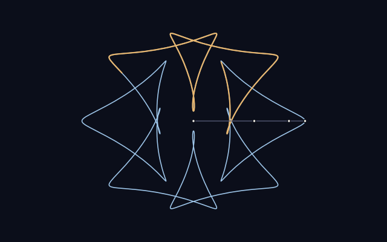
001 · Draw with circlesOrbital sketchbook
Choose two rhythms and watch three turning arms leave a trail. Save a drawing of your own.
-
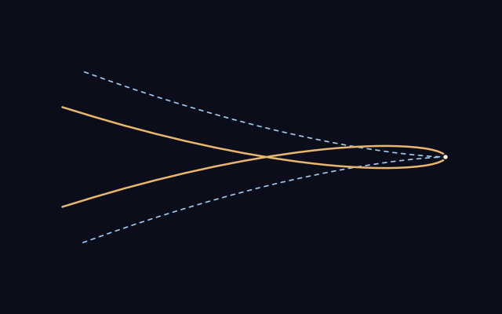
002 · A closer lookThe birth of a loop
Lengthen one arm a little. A rounded turn becomes a sharp cusp, then opens into a loop.
-
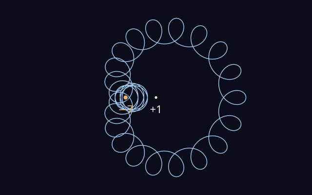
003 · Counting turnsA region can count backwards
Move a point between the regions. The curve can wind around it once, twice, or seven times backwards.
Follow its direction
A point can turn around the center while its direction makes no net turns. What happens when the whole drawing changes?
-
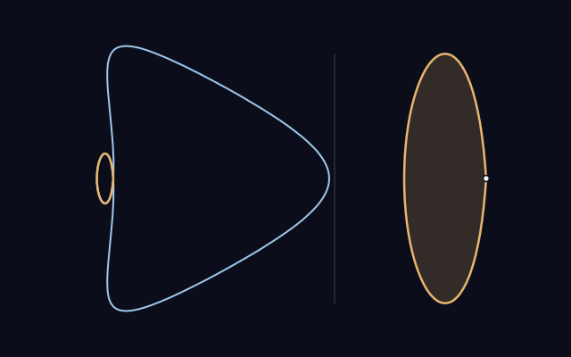
004 · Following a directionTwo lobes, two ways to turn
Follow a big lobe and a little clockwise loop. Watch the point’s position and direction tell different stories.
-
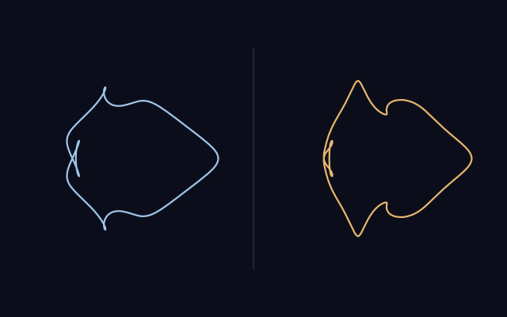
005 · Changing a drawingTwo routes between two zeros
Blend two drawings along different routes. One develops cusps; the other keeps its tracing point moving.
-
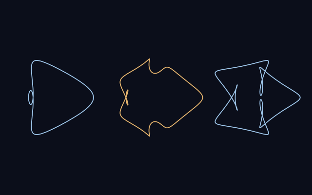
006 · Making roomRoom to keep moving
Lengthen an arm, change the rhythms, then bring it home. A three-leg detour gives the folds room to move.
Look inside a pocket
Small changes leave spaces almost too thin to see. A separation graph brings them into view.
-
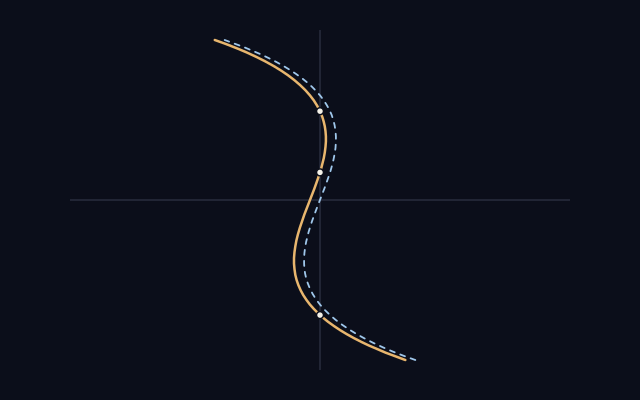
007 · A broken mirrorA small turn breaks the mirror
Turn the backward arms a fraction. A symmetric meeting shifts into a different kind of touch.
-
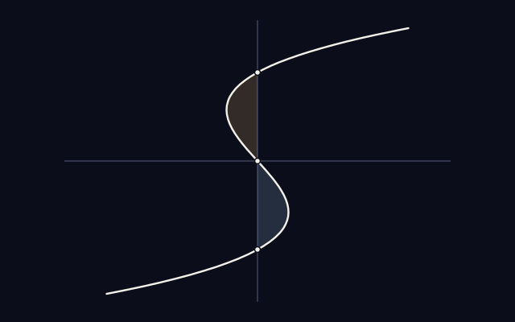
008 · Areas near a contactOne cubic, two area laws
Open and tilt a simple cubic. Two equal pockets and one newborn pocket grow at different rates.
Remember a crossing
The number of crossings cannot tell the whole story. The order of their visits remembers something more.
-
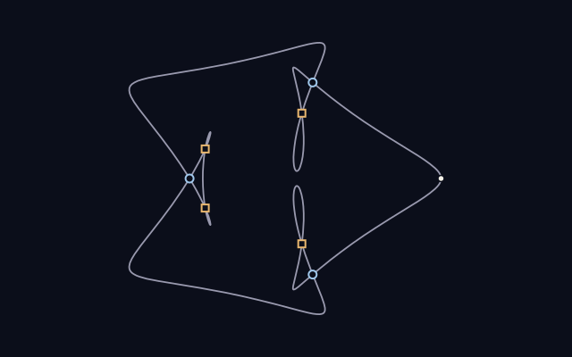
009 · Remembering a crossingWhere the crossing remembers
Move the start around a drawing. Crossing weights change while an integer called strangeness stays fixed.
-
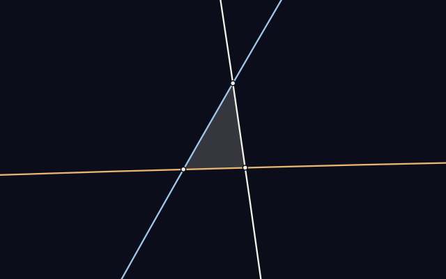
010 · A different weaveThe same counts, a different weave
Two drawings share their crossing and region counts. Tiny triangles switch sides on a route between them.
-
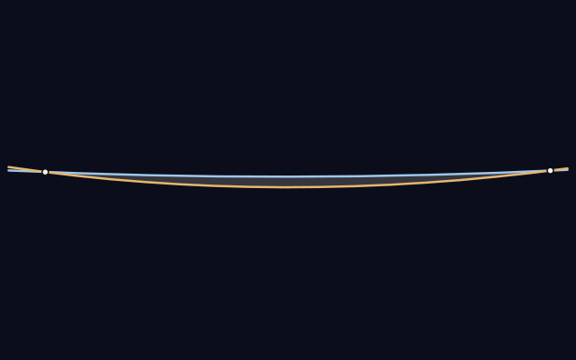
011 · Two ways to touchTwo ways to touch
A little lens closes or opens. Arrows reveal whether its two branches travel together or face each other.